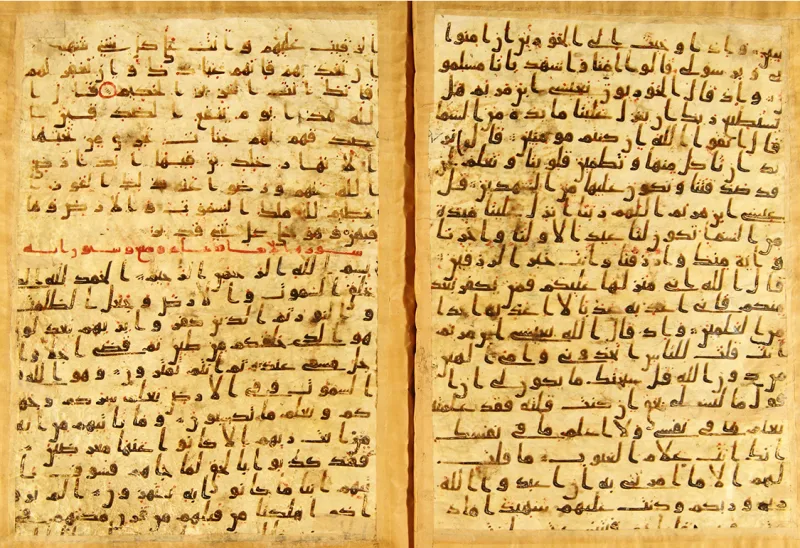
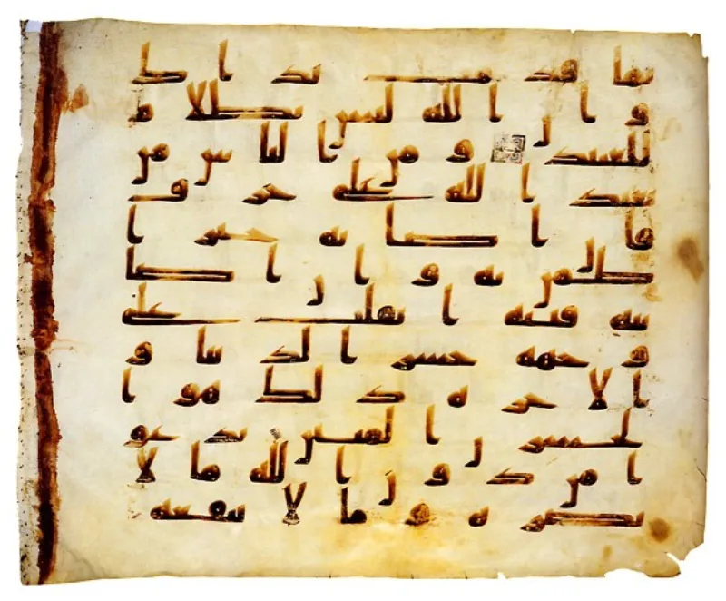

Uthman's order: burn every other Quran
AdmittedThe facts sit in Islam's own trusted sources. You can make this point from their books alone.
The comparison this undoes
Dawah often draws one contrast. A perfectly preserved Quran against a corrupted Bible.
This case uses only Sahih al-Bukhari, Islam's most trusted hadith collection.
What Bukhari records
Within about twenty years of Muhammad's death, Muslims were differing about the Quran "as the Jews and Christians differed about their Scripture" (Sahih al-Bukhari 4987). Caliph Uthman had one version copied.
He then ordered all other Quranic material burnt, "whether written in fragmentary manuscripts or whole copies."
The copies that were destroyed
Early Islamic sources say Ibn Masud's codex lacked Surahs 1, 113 and 114. Sahih al-Bukhari 4977 preserves that dispute.
Ubayy ibn Ka'b's copy held two extra surahs. Sahih al-Bukhari 4992 shows companions arguing over recitation in Muhammad's own lifetime, settled by the seven ahruf concession.
The Muslim answer, at full strength
Al-Azami and the Yaqeen Institute make a serious case. The Quran came in seven ahruf, or modes, all revealed.
So the differences were allowed variation, not error. Uthman's committee of memorisers checked against Hafsa's master copy, with the community's consent.
Mass memorisation carried the text alongside writing. Yaqeen finds that under 4% of companion variant readings even have sound chains.
How strong is this argument?
They admit the events themselves. Only the meaning is argued.
But "the variants were all authorised" cannot be checked once the witnesses are ash. The narrow point survives.
The Quran's uniformity came from a 7th-century editorial act, and a Bible whose variants were kept can be compared openly.
What to say
"Why do you think Uthman needed to burn the other copies?"



How they answer this — at its strongest
They say Uthman preserved the text: the differences were allowed, and he stopped drift.
The best Muslim scholars, Al-Azami and the Yaqeen Institute, argue this proves the text was kept safe, not corrupted. The Quran came down in seven ahruf, or modes, and all of them were from Allah. So the gaps between companions were allowed range, not error.
Uthman's team were men who knew the Quran by heart. They checked against Hafsa's master copy, with the consent of the whole body of Muslims. They cut only readings with no warrant, or ones abrogated — that is, cancelled by a later verse. And they did it before drift could set in. That is the opposite of the Bible's loose copying. Mass memory, called tawatur, carried the text beside the writing. And Yaqeen's own study finds that under 4% of the variant readings credited to companions even have sound chains.
The verdict
Strong for you: Bukhari records the burning, and only its meaning is argued.
Every fact in the claim sits in Sahih al-Bukhari itself. The differing recitals, the burning order, the rows over companion copies — all of it. So the events are granted, and only their meaning is argued.
The ahruf frame is a teaching about God's word, not a check on history. The modes themselves are never spelled out in the sources. The burnt material cannot be got back, by design. And the claim that every variant was allowed cannot be tested once the witnesses are ash.
The narrow point survives every reply. The Quran's one text is the fruit of an editing act we can date to the 7th century. That gives up the dawah contrast with a Bible whose odd copies were kept, and can be compared in the open.